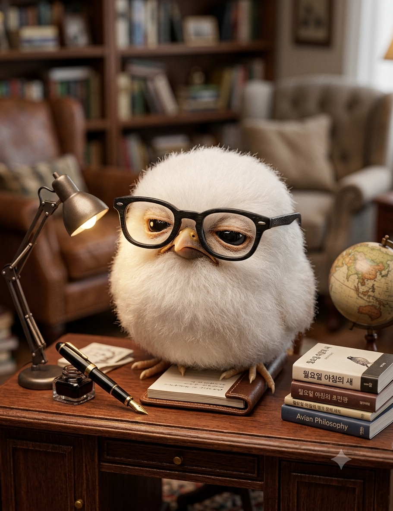

가장 행복한 시간
미디어 호더이자 서퍼죠

이소윤입니다.
쉬고있음 청년
ISTP
겨울철 이불 속
미디어 호더이자 서퍼죠
생명수죠. 하루에 두잔도 가능해요.
내 방 침대 안이 전 세상에서 가장 안전하고 아늑한 대피소.
책을 읽거나 멍때릴 때 배경음으로 틀어두는 잔잔한 비트.
햄버거는 하루 종일 먹을 수도 있고 한 번에 세 개? 가능하죠.
봐주셔서 감사합니다.
이메일 보내기 ✉️© [이소윤]. All rights reserved.